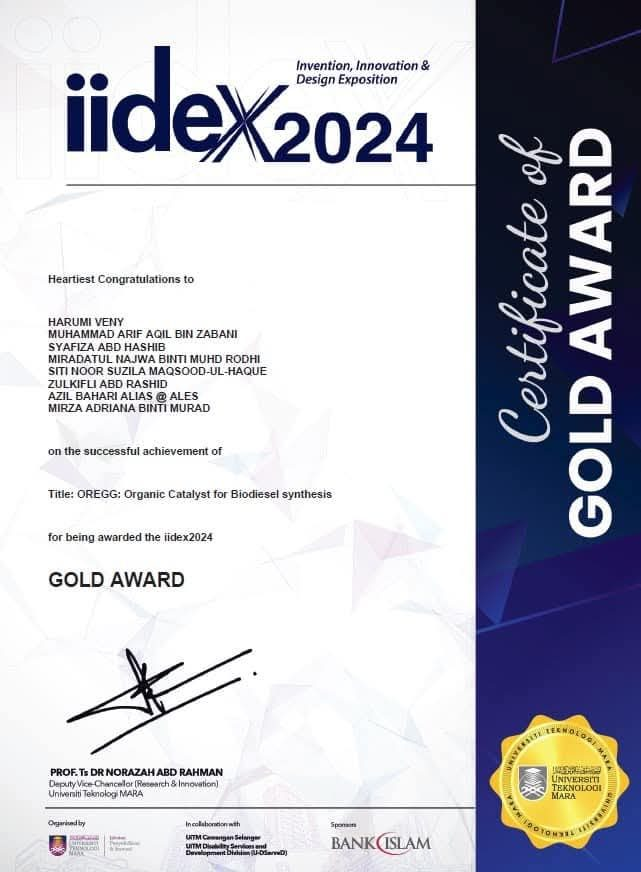
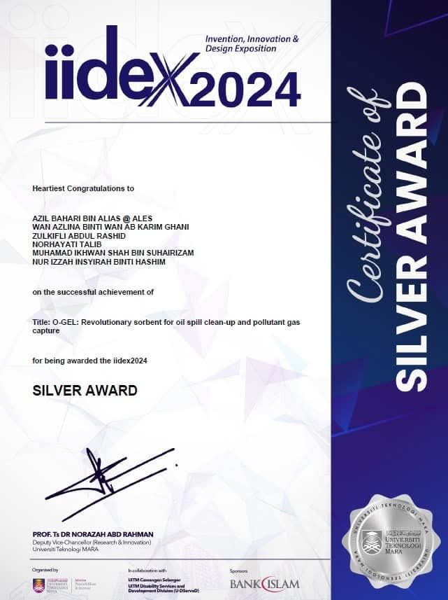
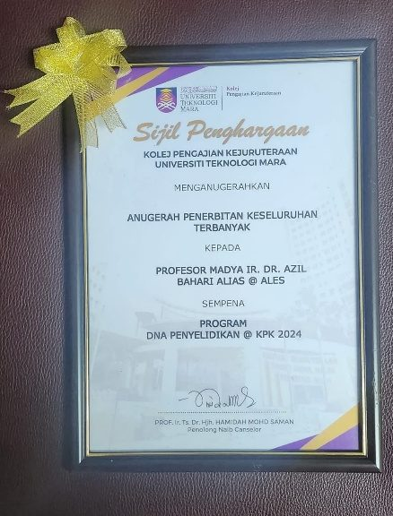
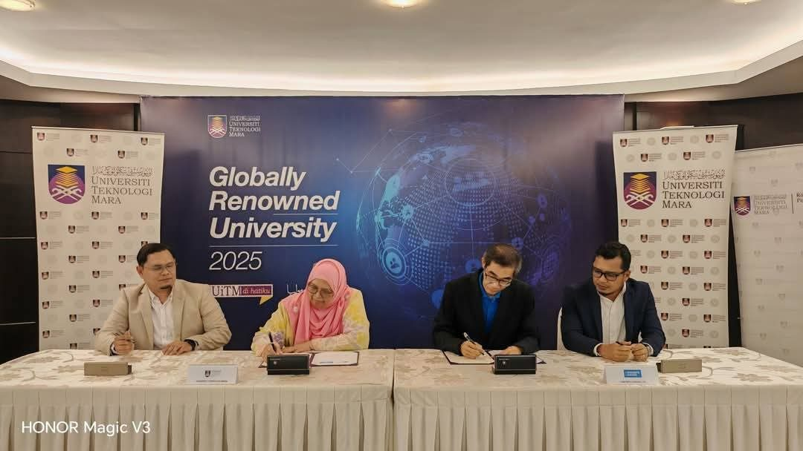
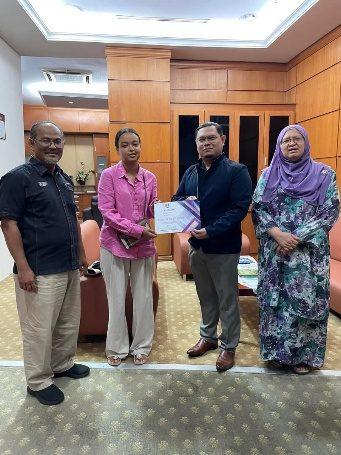
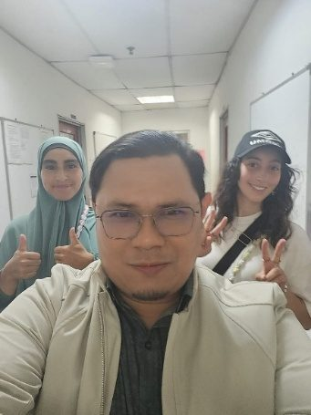

L-11
Prof. Zulkifli becomes a full professor
Ir. Dr. Zulkifli Abd Rashid is promoted to Professor (Grade VK7) in process systems engineering, effective 17 June 2026. Source: Faculty of Chemical Engineering post
Drawing register · 13 sheets
Sheet · Site log
Awards, new contracts and the odd photo from site.
L-11
Ir. Dr. Zulkifli Abd Rashid is promoted to Professor (Grade VK7) in process systems engineering, effective 17 June 2026. Source: Faculty of Chemical Engineering post
L-10
Malay-Sino Chemical Industries’ chlor-alkali plant in Teluk Kalong, and GES Klang Terminal’s C3/C4 LPG facility. Source: UiTM Expert record
Teluk Kalong · Klang
L-09
Prof. Shatir is validating how Pescada Resources separates heavy and light rare earth elements from rare earth carbonate. Source: UiTM Expert record
Laboratory
L-08
Dr Najmiddin is analysing corrosion coupons from PRefChem’s refinery and petrochemical complex for Rohrback Cosasco Systems UK. Source: UiTM Expert record
Pengerang, Johor
L-07
Prof. Shatir is one of 18 UiTM academics on the Stanford University and Elsevier list of the world’s top 2% scientists for 2024 (Utusan Malaysia, 24 September 2025). Source: Utusan Malaysia
Stanford and Elsevier list
L-06
L-05
CIMAH studies for PETRONAS fuel and LPG terminals in Melaka, Kerteh, Pasir Gudang, Lumut and Sepanggar Bay, Sabah. Source: UiTM Expert record
Five sites
L-04
Named Best Research Group at DNA Penyelidikan @ KPK 2024, UiTM College of Engineering. Dr Azil also took the Most Publications Award. Source: Search the web

UiTM College of Engineering
L-03
OREGG, an organic catalyst for biodiesel, won gold. O-GEL, a sorbent for oil spills and pollutant gas, won silver. Source: Search the web

iidex 2024
L-02
56 indexed papers, the most we have published in a single year. Source: Publications, 2022
Journals
L-01
Registered as a UiTM Entiti Kecemerlangan, Tier 4 (CoRe1/T4/2019(1)/FMIA(1)). Source: About: the timeline
UiTM Shah Alam
N-401




